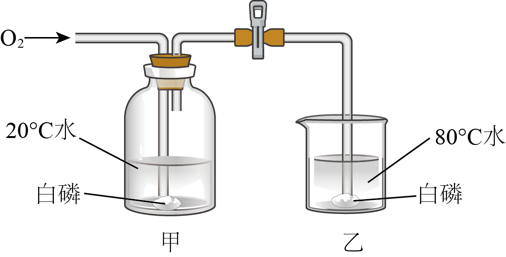

2023年北京中考化学 第25题 解析
25. 用下图装置进行实验。通入 前，白磷均不燃烧；通入后，甲中白磷不燃烧，乙中白磷燃烧。下列说法不正确的是
前，白磷均不燃烧；通入后，甲中白磷不燃烧，乙中白磷燃烧。下列说法不正确的是

已知：白磷的着火点为；红磷的着火点为。
A. 该实验能验证可燃物燃烧需要与接触
B. 该实验能验证可燃物燃烧需要温度达到着火点
C. 若将甲中的白磷换成红磷，能验证可燃物燃烧需要温度达到着火点
D. 若将乙中的白磷换成红磷，能验证可燃物燃烧需要与接触
【答案】D
【解析】
【详解】A、乙中通入氧气前，白磷温度达到着火点，但没有与氧气接触，白磷不燃烧，通入氧气后，乙中白磷温度达到着火点，且与氧气接触，白磷燃烧，由此可验证可燃物燃烧需要与接触，故选项说法正确；
B、通入氧气后，甲中白磷与氧气接触，但温度没有达到着火点，白磷不燃烧，而乙中白磷与氧气接触，且温度达到着火点，白磷燃烧，由此可验证可燃物燃烧需要温度达到着火点，故选项说法正确；
C、若将甲中的白磷换成红磷，通入氧气后，甲中的红磷与氧气接触，但没有达到着火点，红磷不燃烧，而乙中白磷与氧气接触，且温度达到着火点，白磷燃烧，由此可验证可燃物燃烧需要温度达到着火点，故选项说法正确；
D、若将乙中的白磷换成红磷，通入氧气后，甲中白磷不燃烧，乙中的红磷也不燃烧，不能验证可燃物燃烧需要与接触，故选项说法不正确。
故选D。
第二部分
本部分共14题，共45分。
【生活现象解释】